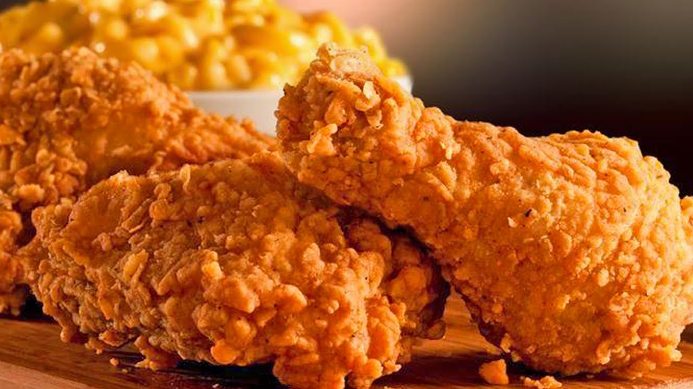

Crispy Fried Chicken
I experimented with lots of recipes over the years to find the best crispy fried chicken. This is it! It's bits and pieces of hints I have heard over the years. It's more a matter of preparation and cooking method!


What Makes This Fried Chicken So Crispy?
There are a few reasons this crispy fried chicken works so well:
- Allowing the buttermilk-flour mixture to come to a paste-like consistency is key to a crispiness on the outside and juiciness on the inside.
- Most fried chicken is cooked at a high temperature throughout the frying process. This one, however, only starts at a very high heat — after browning, the heat is reduced for about 30 minutes. You'll turn up the temperature again at the end, locking in that crispy texture.
- Paprika adds smoky flavor and has a low smoke point, which helps with browning the chicken.
Crispy Fried Chicken Ingredients
Here's what you'll need to make the best, crispiest fried chicken of your life:
- Chicken Cut a four-pound whole chicken into pieces or purchase four pounds of breasts, drumsticks, wings, legs, and/or thighs at the grocery store.
- Buttermilk Acidic buttermilk tenderizes the chicken without making it too tough. Also, it helps the flour mixture stick to the chicken.
- Flour All-purpose flour gives the buttermilk and seasonings something to stick to, while ensuring a wonderfully crispy crust.
- Seasonings This crispy fried chicken recipe calls for paprika (which helps with browning), salt, and pepper. You can add more spices and seasonings to taste.
- Oil Vegetable oil is perfect for frying chicken because it has a high smoke point.
Steps on How to Make Crispy Fried Chicken
- Take your cut up chicken pieces and skin them if you prefer.
- Put the flour in a large plastic bag (let the amount of chicken you are cooking dictate the amount of flour you use). Season the flour with paprika, salt and pepper to taste (paprika helps to brown the chicken).
- Dip chicken pieces in buttermilk then, a few at a time, put them in the bag with the flour, seal the bag and shake to coat well.
- Place the coated chicken on a cookie sheet or tray, and cover with a clean dish towel or waxed paper. LET SIT UNTIL THE FLOUR IS OF A PASTE-LIKE CONSISTENCY. THIS IS CRUCIAL!
- Fill a large skillet (cast iron is best) about 1/3 to 1/2 full with vegetable oil. Heat until VERY hot.
- Put in as many chicken pieces as the skillet can hold. Brown the chicken in HOT oil on both sides.
- When browned, reduce heat and cover skillet; let cook for 30 minutes (the chicken will be cooked through but not crispy). Remove cover, raise heat again, and continue to fry until crispy.
- Drain the fried chicken on paper towels. Depending on how much chicken you have, you may have to fry in a few shifts. Keep the finished chicken in a slightly warm oven while preparing the rest.